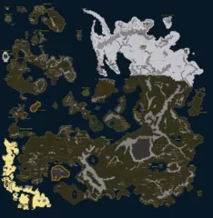
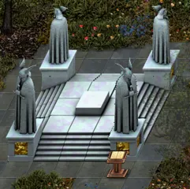
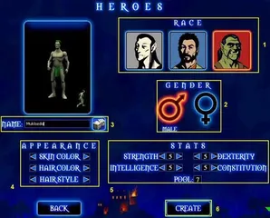
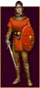
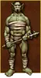
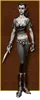
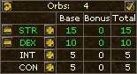
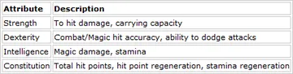

A beginner's route through Ashen Empires
From the beach of Valinor to about level 30, with what to do, in which order, and why: for each of the three towns a new character can go to after Valinor (Krog, Silvest, Whisperdale), and what comes after.
It is written for somebody who has never played. If you only want the order, read The route in one page and the page of your town.
The route in one page


The world. Valinor is the small island in the north-westAE

Lotor's Summer Palace, the hub of the portalsAE| Level | Where | What |
|---|---|---|
| 1 to 3 | Valinor, in and around town | The welcome quest, one weapon or magic trainer, the no-fight quests for two bags, the level 1 and 2 hunts for your first gear |
| 3 to 7 | Valinor, south-west | "War" as far as the goblins, and "Proof" for the Totem of the Wolf Pup on the same goblins |
| 7 to 10 | Valinor, the east | The undead at the gate, Frump the Cook, the cloak and the boots from beyond the gate. Fix your orbs for free. Leave |
| 8 to 10 | Your town | Bind at the spawn gate, align at the Steward, take a patron mission, take every quest in town |
| 10 to 15 | Around your town | The quests that fight level 5 to 12 creatures; always one patron mission running |
| 15 to 20 | The edges of your region | The level 14 to 20 quests; the trainer quests of your weapon or magic; the first pieces of the patron set |
| 20 to 25 | Your region's dungeons, and the two other towns by portal | Put on the level 20 gear you earned; the bosses; the best quests of the other two towns |
| 25 to 30 | Wherever the patron sends you | Patron missions, the last hard quests of the region, then the Highlands |
| 30 to 40 | Highlands, the rest of Krythan, Gulley | See After your starting region |
| 40 on | Anywhere, for the Trading Mercenary in Roycroft | With the Tides of Fate expansion: his kill missions, the best experience in the game. See Level 40 on |
Six things matter more than any single quest:
- Get the Totem of the Wolf Pup before you leave Valinor. It speeds up your attacks and costs about 25 goblins. There is a way to get it later, but it is a detour.
- Settle your orbs on Valinor. Resetting them is free and unlimited there, and free only once more after it.
- Align with the town that fits your main attribute, not simply the one you arrive in.
- Keep a patron mission running at all times once you are on the mainland. It is the best experience in the game below level 50 and it pays for your armor.
- You are not tied to your town. A free portal network joins the three towns, and each has a few quests that are worth the trip for anyone.
- At level 40, go to the Trading Mercenary if you have the Tides of Fate expansion. From then on his missions are how you level.
Before you start: build and town
The four attributes


Making a characterWiki

HumanWiki

OrcWiki

Night elfWiki

The four attributes on the character screenWiki

What the game says each one doesWikiFrom the game's own Help Menu:
| Attribute | What it does |
|---|---|
| Strength | Damage of melee and ranged attacks, how much you can carry |
| Dexterity | Hitting and not being hit. Half your Dexterity is added to your armor |
| Intelligence | Chance to cast, spell damage, stamina |
| Constitution | Health, regeneration, stamina |
Each level gives you orbs to put into these. Gear has requirements, and they are checked against your base orbs: bonuses from other gear do not count. Armor asks for a character level, a weapon asks for a level in its own weapon skill.
The Help Menu names four builds. They are a good place to start:
| Build | Orbs | Town to align with |
|---|---|---|
| Classic Warrior | Strength and Constitution | Krog |
| Versatile Warrior | Dexterity first, then Strength | Whisperdale |
| Classic Mage | Intelligence and Constitution | Silvest |
| Versatile Mage | Intelligence and Dexterity | Silvest |
| Archer (not named in the Help Menu) | Dexterity and Strength | Whisperdale |
Which town
When you leave Valinor, the Island Steward asks where you want to go. Two different choices hide behind that question, and the game does not make it obvious:
- Where you arrive. This only decides which town you step into. It can be undone by walking through a portal.
- Which town you align with. You do this afterwards, at the Steward next to the town's spawn gate. It gives one extra orb in that town's attribute and opens that town's patron.
| Town | People | Extra orb | Patron | Patron set gives |
|---|---|---|---|---|
| Krog | Orcs | +1 Strength | Lord Targon | +40 Str, +14 Con, +295 health |
| Silvest | Humans | +1 Intelligence | Lord Aelfwyn | +40 Int, +14 Str, +295 health |
| Whisperdale | Night elves | +1 Dexterity | Lord Vezryl | +40 Dex, +14 Str, +295 health |
Align by your main attribute, whatever your race. The extra orb is the only way to reach 101 in an attribute, and some of the last gear in the game asks for 101 Strength, 101 Intelligence or 101 Dexterity. That is a long way off, and the choice can be undone once for free (at Lotor's Steward in Lotor's Castle; after that it costs 60 tokens from the store). The more immediate reason is the patron set: you will wear it from about level 15 to 45, and you want the one that raises your own attribute.
Race does not lock you out: our human archer aligned with Whisperdale and was given the patron's missions and the archer quests there.
If you are unsure, go to the town of your build and align there. If you arrived somewhere else by mistake, do not align; take the portal to the right town first (see Travel).